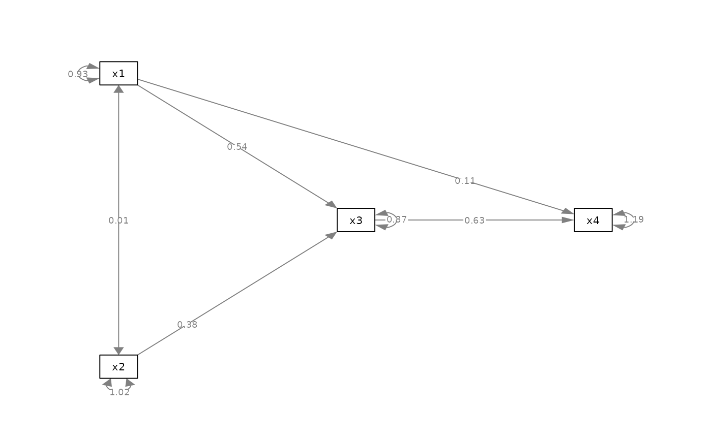
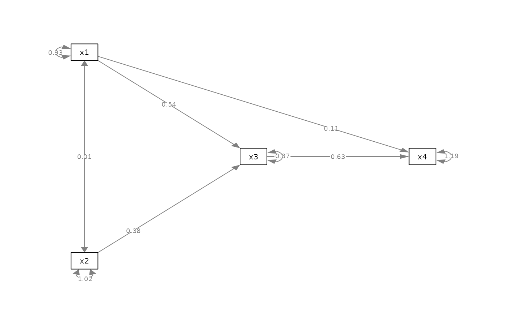

Set the positions of edge labels of selected edges
Source:R/set_edge_label_position.R
set_edge_label_position.RdSet the positions of edge labels of selected edges.
set_edge_label_position(semPaths_plot, position_list = NULL)Arguments
- semPaths_plot
A qgraph::qgraph object generated by semPlot::semPaths, or a similar qgraph object modified by other semptools functions.
- position_list
A named vector or a list of named lists. For a named vector, the name of an element should be the path as specified by lavaan::model.syntax or as appeared in
lavaan::parameterEstimates(). For example, to change position of the edge label of the path regressingyonx, the name should be"y ~ x". The value is the position. The mid-point of the edge is 0.5. The closer the value to 1, the closer the label to the left-hand-side node (yin this example). The closer the value to 0, the close the label to the right-hand-side node (xin this example). For example,c("y ~ x1" = .2, "y ~ x2" = .7)moves the path coefficient fromx1toycloser tox, and the path coefficient fromx2toycloser toy. For a list of named lists, each named list should have three named values:from,to, andnew_position. The edge label position of the edge fromfromtotowill be set tonew_position. For example,list(list(from = "x1", to = "y", new_position = .2), list(from = "x2", to = "y", new_position = .7))is equivalent to the named vector above.
Value
A qgraph::qgraph based on the original one, with edge label positions for selected edges changed.
Details
Modify a qgraph::qgraph object generated by semPlot::semPaths and change the edge label positions of selected edges.
Examples
mod_pa <-
'x1 ~~ x2
x3 ~ x1 + x2
x4 ~ x1 + x3
'
fit_pa <- lavaan::sem(mod_pa, pa_example)
lavaan::parameterEstimates(fit_pa)[, c("lhs", "op", "rhs", "est", "pvalue")]
#> lhs op rhs est pvalue
#> 1 x1 ~~ x2 0.005 0.957
#> 2 x3 ~ x1 0.537 0.000
#> 3 x3 ~ x2 0.376 0.000
#> 4 x4 ~ x1 0.111 0.382
#> 5 x4 ~ x3 0.629 0.000
#> 6 x3 ~~ x3 0.874 0.000
#> 7 x4 ~~ x4 1.194 0.000
#> 8 x1 ~~ x1 0.933 0.000
#> 9 x2 ~~ x2 1.017 0.000
m <- matrix(c("x1", NA, NA,
NA, "x3", "x4",
"x2", NA, NA), byrow = TRUE, 3, 3)
p_pa <- semPlot::semPaths(fit_pa, whatLabels="est",
style = "ram",
nCharNodes = 0, nCharEdges = 0,
layout = m)
 my_position_vector <- c("x3 ~ x2" = .25,
"x4 ~ x1" = .75)
p_pa2v <- set_edge_label_position(p_pa, my_position_vector)
plot(p_pa2v)

my_position_list <- list(list(from = "x2", to = "x3", new_position = .25),
list(from = "x1", to = "x4", new_position = .75))
p_pa2l <- set_edge_label_position(p_pa, my_position_list)
plot(p_pa2l)
my_position_vector <- c("x3 ~ x2" = .25,
"x4 ~ x1" = .75)
p_pa2v <- set_edge_label_position(p_pa, my_position_vector)
plot(p_pa2v)

my_position_list <- list(list(from = "x2", to = "x3", new_position = .25),
list(from = "x1", to = "x4", new_position = .75))
p_pa2l <- set_edge_label_position(p_pa, my_position_list)
plot(p_pa2l)